Visualize U.S. Census Data with ArcGIS

In this blog post, I’ll walk through my process of creating an ArcGIS geodatabase and a set of layouts visualizing U.S. Census Data. The data used for this app is from table B20005 (Sex By Work Experience In The Past 12 Months By Earnings In The Past 12 Months).
You can view the final layout PDFs at the following links:
- Minnesota Female Full Time Worker Estimates by Tract - Counts.pdf
- Minnesota Female Full Time Worker Estimates by Tract - Percentages.pdf
- Minnesota Male Full Time Worker Estimates by Tract - Counts.pdf
- Minnesota Male Full Time Worker Estimates by Tract - Percentages.pdf
Table of Contents
Get the Data
Tract Boundaries
- Download and unzip 2019 TIGER Shapefile for MN (tl_2019_27_tract.zip) (corresponds to the final year, 2019, in the ACS 5-year estimates). These will contain the Census Tract geographies needed to create a map in ArcGIS.
ACS 5-Year Estimates
Using data.census.gov
- On data.census.gov, search for B20005
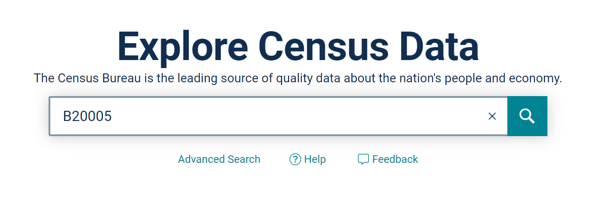
- Select the link to the Table B20005 with “2019 inflation-adjusted dollars”

- Click the dropdown at the top next to the label Product and select 2015: ACS 5-Year Estimates Detailed Tables
- Click Customize Table at the top right of the page

- In the Geo* section, click Tract > Minnesota > All Census Tracts within Minnesota

- Once it’s finished loading, click Close and then Download Table
Once downloaded, extract the zip folder and open the file ACSDT52015.B20005_data_with_overlays….xslx_ in Excel any tool that can handle tabular data
Slice the last 11 characters of the GEO_ID (using the RIGHT function in a new column) to replace the existing GEO_ID column values. For example, a GEO_ID of 1400000US27029000100 should be replaced with 27029000100. This will later on be matched with the GEOID field in the tl_2019_27_tract shapefile
Save/export the file as .XLSX
Using the censusapi R package
Pass the following arguments to the censusapi::listCensusMetadata function and assign its return value to B20005_vars:
B20005_vars <- censusapi::listCensusMetadata(
name="acs/acs5",
vintage="2015",
type="variables",
group="B20005"
)- Pass the following arguments to censusapi::getCensus and assign its return value to B20005:
B20005 <- censusapi::listCensusMetadata(
name="acs/acs5",
vintage="2015",
region="tract:*",
regionin="state:27", # 27 = Minnesota state FIPS code
vars=c("GEO_ID", "NAME", B20005_vars$name)
)- Replace GEO_ID (or create a new column) with the last 11 characters
B20005 <- substr(B20005$GEO_ID, 10, 20)- Export to an .XLSX file
write.xlsx(B20005, “acs5_b20005_minnesota.xlsx”, row.names = FALSE)Connect Data to Geodatabase
Open ArcGIS Pro and start a new project.
Tract Boundaries
- Right click Folders in the Contents pane and click Add folder connection

- Select the downloaded (and extracted) tl_2019_27_tract folder and click OK
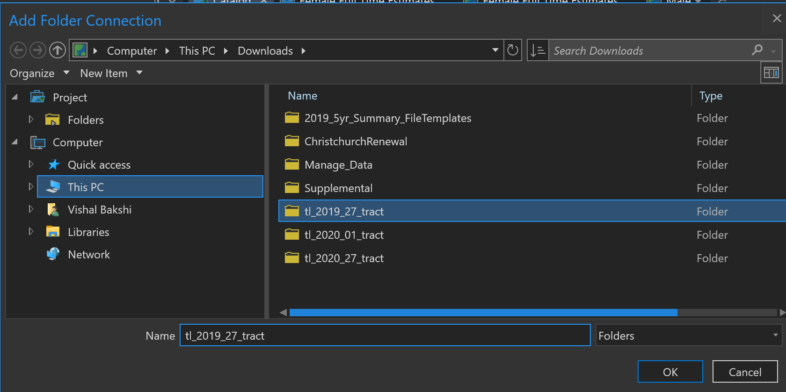
Click on tl_2019_27_tract folder in the Contents pane
In the Catalog pane, right-click tl_2019_27.shp and then click Export > Feature Class to Geodatabase

Confirm Input Features (tl_2019_27_tract.shp) and Output Geodatabase (Default.gdb or whatever geodatabase you are connected to) and then click the green Run button
Refresh the Geodatabase and click on it in the Contents pane to view the added shapefile

ACS 5-Year Estimates
Under the View ribbon click on Geoprocessing to open that pane
In the Geoprocessing pane, search for Join Field and click on it
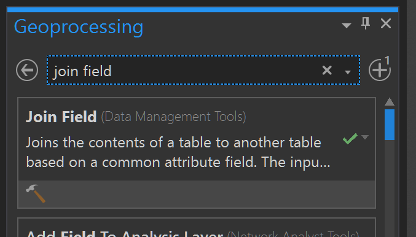
- Next to Input Table click on the folder icon to Browse. Select the tl_2019_27_tract table in your geodatabase
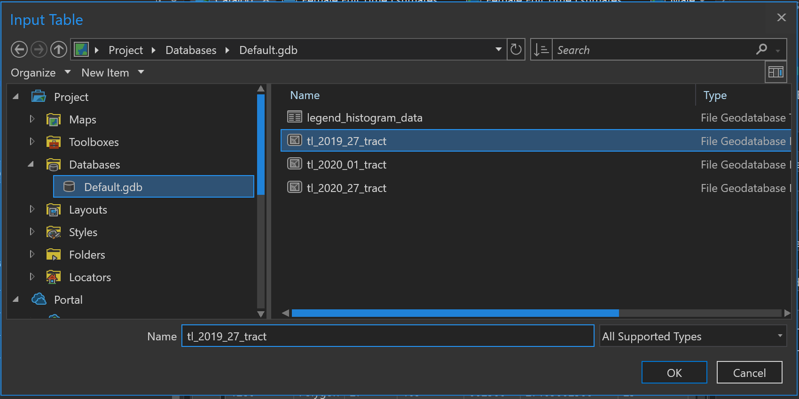
Click the Input Join Field dropdown and select GEOID
Next to Join Table click on the folder icon to Browse. Select the acs5_b20005_minnesota$ Excel table and click OK (note: the Excel table is inside the XLSX file)

Type GEO_ID under Join Table Field
Click on the down arrow next to Transfer Fields and select B20005_002E, B20005_003E, B20005_049E, and B20005_050E
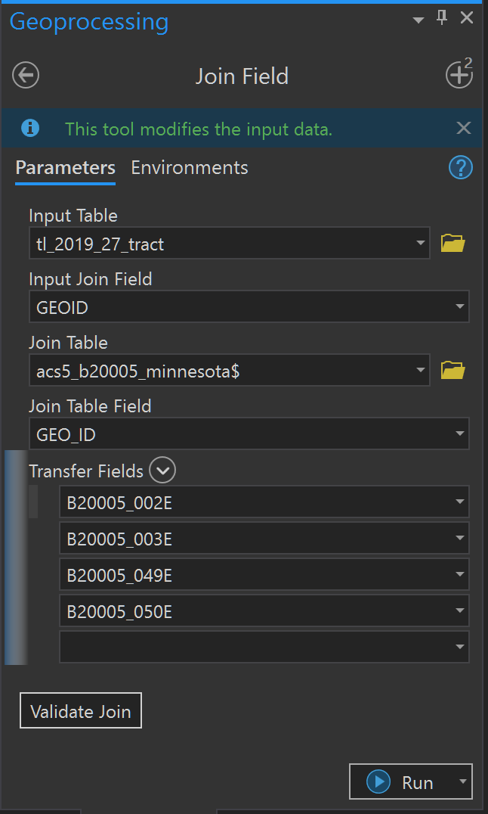
- Click on Validate Join

Click on Run
A success message should be displayed at the bottom of the Geoprocessing pane
Visualize the Data
In this section, I’ll create maps and layouts to visualize the population estimates using Census Tract spatial data.
Create a Map
- In the Catalog pane, right-click tl_2019_27_tract > Add to New > Map
- To reference the raw data: from the Feature Layer ribbon, click Attribute Table
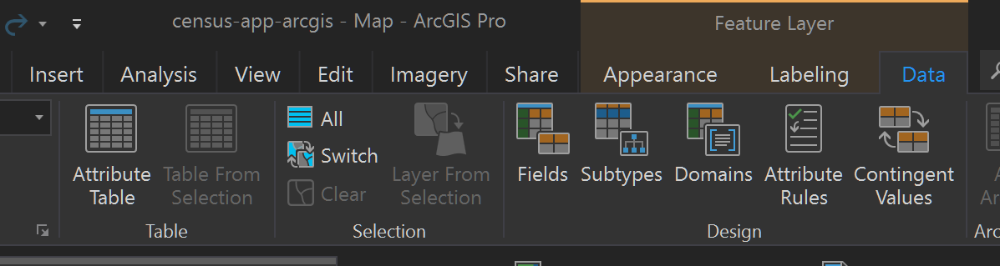
Create a Symbology
Select the tl_2019_27_tract layer in Contents pane
Click Appearance under the Feature Layer ribbon
Click the down arrow on Symbology and select Graduated Colors

- Select B20005_002E in the Field dropdown and Natural Breaks (Jenks) for the Method

- The class breaks created by this method do not reliably classify the data, which is determined using the City of New York Department of Planning Map Reliability Calculator. There’s a 10.1% chance that a tract is erroneously classified.
- After adjusting the class breaks, the following result in a reliable result (less than 10% chance of misclassifying any geography on the map and less than 20% of misclassifying estimates within a class due to sampling error)

- Apply these breaks in the Classes tab in the Symbology pane
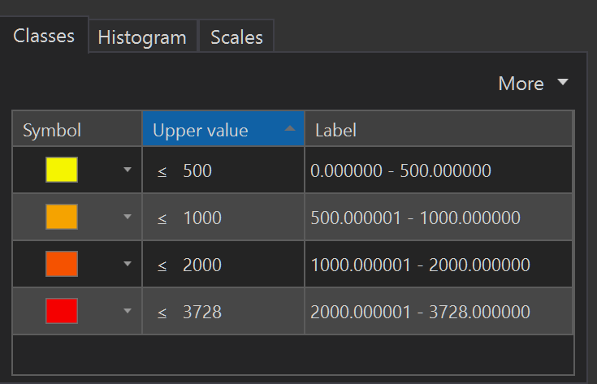
- The Map pane displays the updated choropleth
Create a Layout
Under the Insert ribbon click on New Layout and Letter (8.5” x 11”)


- On the Insert ribbon, click Map Frame and Default Extent under the Map category
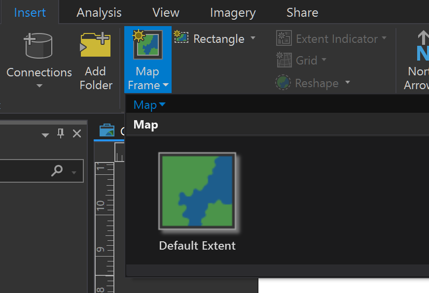
- Click and drag the cursor to draw the Map Frame. Under the Layout ribbon select Activate and zoom/pan until the full choropleth is visible. Click Deactivate when you’re finished.

- Add guides to create 0.5 inch margins by right-clicking on rulers clicking Add Guide
- Under the Insert ribbon click on Legend and draw a rectangle underneath the map
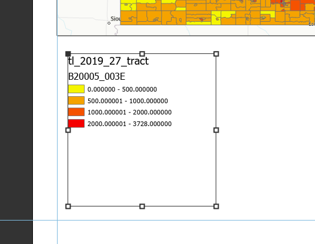
- Right-click the legend and click Properties to format the font size, text visibility (under Legend Item in the dropdown next to Legend in the Format Legend panel) and more
- On the Ribbon tab in the Graphics and Text panel, you can choose different text types to add text to your layout. I’ve added titles and explanatory text.
The census tracts for the city of Minneapolis are too small to be clearly visible. Under the Insert ribbon click Map Frame, select the map and draw a small rectangle over Wisconsin.
With the new Map Frame selected, click Reshape > Circle under the Insert ribbon. Draw a circle over the rectangular map.
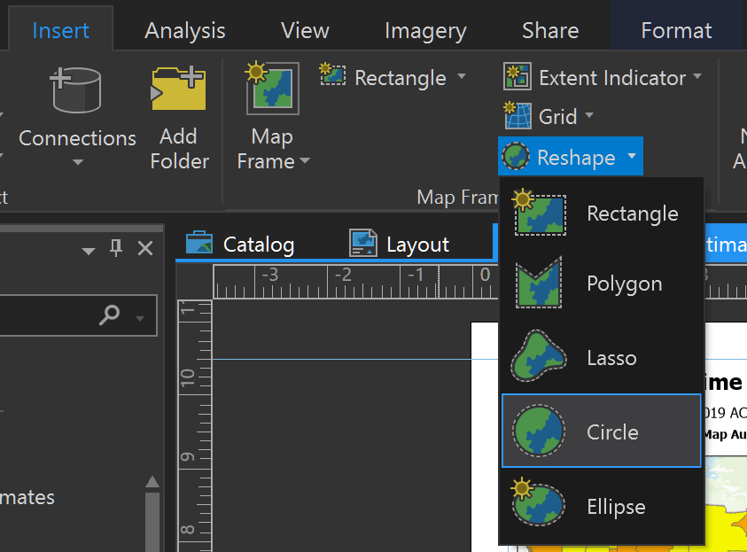
- Right-click on the circular map and click Properties to add a border. Add a textbox to label it as the City of Minneapolis.
- From the Graphics and Text panel on the Insert ribbon use the straight line and circle tool to add some visual cues indicating that the map frame is a detail view of the city
- Under the Share ribbon, select Export Layout and export it to a PDF file
Normalize the Data
While the worker population estimates gives us a sense of how workers are distributed across the state, they are a proxy for population density. Census Tracts in Urban areas, like the Minneapolis, will likely have more workers than Rural areas, because they have a higher population. To supplement this layout, I’ll create layouts that show the percentage of the total sex population who are full time workers.
- To duplicate the Male Full TIme Estimates layout, right-click it in the Catalog pane, click Copy and then right click in the gray area underneath it and click Paste

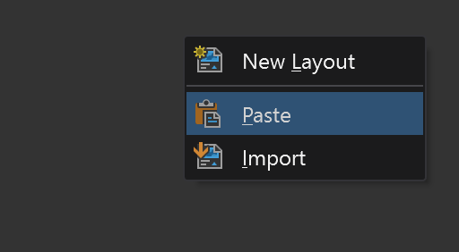
Rename the layout to Male Full Time Percentages and open it
Rename the two maps in the Contents pane
- Right-click tl_2019_27_tract under Main Map and click Symbology to open the Symbology pane
- Select B20005_002E (Total Male Estimate) in the Normalization dropdown. This will be the value that divides a Census Tract’s population estimate
- Calculate the Margin of Error (MOE) for the percentage of total male workers who are full time employed using equation 6 from the “Calculating Measures of Error for Derived Estimates” in the Understanding and Using American Community Survey Data: What All Data Users Need to Know handbook in order to determine the class break reliability. In the equation below, P = X/Y is the percentage of full time workers in the tract (X= B20005_003E and Y = B20005_002E)

- One reliable set of class breaks, which were few and far between, was the following:

- Apply those class breaks in the Symbology pane and update the text to match

Create Additional Layouts
- Repeat the process to create the following Layouts given the following class breaks
- Female Full Time Estimates
- Female Full Time Percentages
I hope you enjoyed this tutorial.